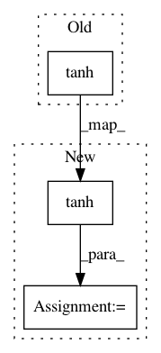

2767c948afa434f863df3b5eb1946a032dfba588,spotlight/sequence/representations.py,CNNNet,user_representation,#CNNNet#Any#,324
Before Change
(self.dilation[0] - 1))
x = F.pad(sequence_embeddings,
(0, 0, receptive_field_width, 0))
x = F.tanh(self.cnn_layers[0](x))
for (cnn_layer, kernel_width, dilation) in zip(self.cnn_layers[1:],
self.kernel_width[1:],
self.dilation[1:]):
After Change
(0, 0, 1, 0))
x = F.pad(sequence_embeddings,
(0, 0, receptive_field_width, 0))
x = F.tanh(self.cnn_layers[0](x)) + residual
for (cnn_layer, kernel_width, dilation) in zip(self.cnn_layers[1:],
self.kernel_width[1:],
self.dilation[1:]):
receptive_field_width = (kernel_width +
(kernel_width - 1) *
(dilation - 1))
residual = x
x = F.pad(x, (0, 0, receptive_field_width - 1, 0))
x = F.tanh(cnn_layer(x)) + residual
x = x.squeeze(3)
In pattern: SUPERPATTERN
Frequency: 4
Non-data size: 3
Instances
Project Name: maciejkula/spotlight
Commit Name: 2767c948afa434f863df3b5eb1946a032dfba588
Time: 2017-07-13
Author: maciej.kula@gmail.com
File Name: spotlight/sequence/representations.py
Class Name: CNNNet
Method Name: user_representation
Project Name: OpenNMT/OpenNMT-py
Commit Name: 7bc571a99fdee0e322c16fd725a8c87a4addf9fd
Time: 2017-07-05
Author: s.gehrmann@outlook.com
File Name: onmt/modules/GlobalAttention.py
Class Name: GlobalAttention
Method Name: forward
Project Name: ray-project/ray
Commit Name: 165a86f1ab91c86828e55b3ca62030569e1c2c61
Time: 2020-04-19
Author: sven@anyscale.io
File Name: rllib/models/tf/tf_action_dist.py
Class Name: SquashedGaussian
Method Name: _squash
Project Name: ray-project/ray
Commit Name: 165a86f1ab91c86828e55b3ca62030569e1c2c61
Time: 2020-04-19
Author: sven@anyscale.io
File Name: rllib/models/torch/torch_action_dist.py
Class Name: TorchSquashedGaussian
Method Name: _squash